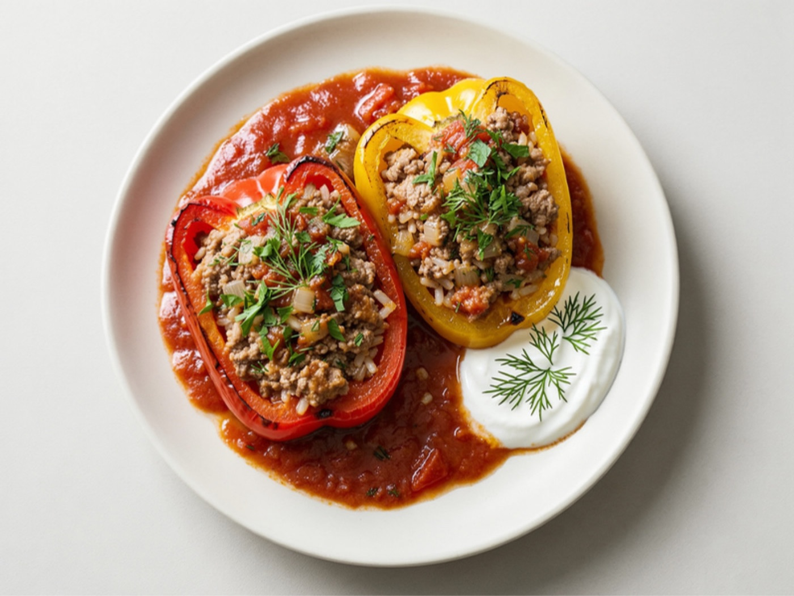

Вечері · № 049
Фаршировані перці
1 год 10 хвчас
6порції
8інгредієнтів
КБЖВ · ПП-версіяна порцію
223ккал
19 гбілки
5 гжири
27 гвуглеводи
Класична версія: 358 ккал · Ж 22 г → тут на 38% менше калорій
На 100 г: 77 ккал · Б 6 · Ж 2 · В 9. Розраховано за інгредієнтами рецепта, значення приблизні.
Повний рецепт — за підпискою
Інгредієнти з точними грамовками й покрокове приготування страви «Фаршировані перці» доступні в платному Telegram-каналі Артема Трачука. Підписка відкриває всі 100 ПП-рецептів.
- 8 інгредієнтів з точними грамовками
- 4 кроки приготування
- КБЖВ і нові рецепти щотижня
Вже підписані? Увійдіть через Telegram, і рецепт відкриється тут.
Безкоштовно: усі рецепти розділу «Сніданки».